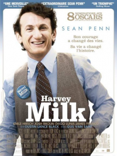

Les huit dernières années de la vie d’Harvey Milk, de ses premiers combats pour les droits des homosexuels à San Francisco, jusqu’à son élection au conseil municipal de la ville et son assassinat.
Un film qui vaut en grande partie pour sa dernière demi-heure, absolument magnifique. Le reste est moins éblouissant. Sean Penn, lui, est exceptionnel.